Harmonic Analysis, Partial Differential Equations, and Geometric Measure Theory
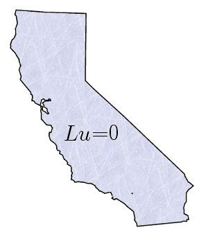
General Information
The official page for this special session is here.
The session will be held on Thursday, January 10, 2013.
All talks are 20 minutes long.
Speakers
Click on a name to jump to the speaker's abstract:
Jonas Azzam,
Ariel Barton,
Jennifer Beichman,
Nicholas Boros,
Melissa Davidson,
John Helms,
Stephen Lewis,
Michael Minner,
Jill Pipher,
Malabika Pramanik,
Charles Smart,
Armen Vagharshakyan,
Jose Vega-Guzman,
Kazuo Yamazaki
Morning Session (8:00 am – 11:50 am)
- John Helms (University of California, Santa Barbara)
- 8:00 am – 8:20 am
- Lifespan of Solutions to the Wave Equation in Exterior Domains
- In this talk, we will discuss lifespans of solutions to quiaslinear wave equations of the form
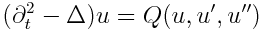 whose domain is
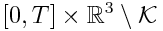, where
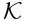 is a smooth, bounded domain. Previous results have
shown that longtime existence of solutions when
is star-shaped. We will see that this result extends to more general geometries. In particular, we only assume that the
local enegery decay near decays sufficiently rapidly
for specific solutions to the linear wave equation. This is joint work with Professor Jason Metcalfe, UNC-Chapel Hill.
- Melissa Davidson (Notre Dame University)
- 8:30 am – 8:50 am
- The Wave Stands Alone: Journey of a Solitary Wave
- Solitary waves, or solitons, are a popular subject in partial differential equations. They evoke many questions,
including where did they come from? Who thought that was worth studying? We shall trace the history of the solitary wave starting
from the very beginning of general wave theory and ending with some discoveries about solitary waves themselves.
- Jennifer Beichman (University of Michigan)
- 9:00 am – 9:20 am
- New decay estimates for a class of 1D dispersive PDE and applications to the 2D water wave problem
- The water wave problem in 2D reduces to a 1D problem on the interface which acts like a dispersive
PDE in some sense. From this starting point, I will present joint work with Sijue Wu deriving decay estimates
for a class of 1D dispersive PDE including the water wave case, with precise applications to the existence for the
solutions of the 2D water wave problem.
- Michael Minner (Drexel University)
- 9:30 am – 9:50 am
- Sparse Singal Recovery and Remote Sensing
- The purpose of remote sensing is to acquire information about an object through the propogation of electromagnetic waves,
specifically radio waves for radar systems. These systems are constrained by the Nyquist sampling rate required to guarantee
efficient recovery of the signal. Recent advancements of Compressive Sensing offer a means of efficiently recovering such signals
with fewer measurements. In this talk, we will present several key concepts of Compressive Sensing and highlight its applicability
to radar.
- Jose Vega-Guzman (Arizona State University)
- 10:00 am – 10:20 am
- Solution Method for Certain Evolution Equations
- A method to construct solutions of the Cauchy initial value problem for certain linear
and nonlinear evolution equations is presented. Emphasis is placed mainly on the analytical
treatment of noautonomous differential equations, which are challenging to solve despite the
existent numerical and symbolic computational software programs available at the moment.
In the majority of such methods, ideas from Transformation theory are adopted allowing one to
solve the initial value problem under consideration. The formulae obtained for the corresponding
Kernels involve the solution of a Riccati (or Ermakov) differential equations associated to the
problem. Examples from Fluid Dynamics, Finance and Physics will be presented in order to corroborate
the method.
- Kazuo Yamazaki (Oklahoma State University)
- 10:30 am – 10:50 am
- Regularity criteria of active scalars in terms of partial derivatives
- Active scalars play important roles in understanding fluid mechanics. Recently, while their global regularity issue has
received much attention from many mathematicians, it remains to be a challenging topic in the supercritical case.
- We obtain new regularity criteria and smallness condition for the global regularity of the solution to the
N-dimensional active scalars convected by incompressible fluid. In particular, it is shown that in order to obtain global
regularity results, one only needs to bound its partial derivatives, dropping the condition on one direction. The results may
be applied to the surface quasi-geostrophic equation, in the case N=2, and furthermore porous media equation goverened by
Darcy's law, in the cases N=2 or 3. Further extension will also be shown in the case of porous media equation.
- Charles Smart (Massachusetts Institute of Technology)
- 11:00 am – 11:20 am
- Regularity and stochastic homogenization of fully nonlinear equations without uniform ellipticity.
- We prove regularity and stochastic homogenization results for certian degenerate elliptic operators in
nondivergence form. The equation is required to be strictly elliptic, but the ellipticity may oscillate on the
microscopic scale and is only assumed to have a finite d-th moment, where d is the dimensions. Showing that
such an equation behaves like a uniformly elliptic equation requires a novel reworking of the regularity theory.
We prove deterministic estimates depending on averaged quantities involving the distribution of the ellipticity, which
are controlled in the macroscopic limit by the ergodic theorem. We show that the moment condition is sharp by
giving an explicit example of an equation whose ellipticity has a finite p-th moment, for every p<d, but for
which regularity and homogenization break down.
- Jill Pipher (Brown University)
- 11:30 am – 11:50 am
- Neumann and regularity problems for second order elliptic operators with non-smooth coefficients
- I will describe recent progress in Neumann and regularity boundary value problems for second order divergence form elliptic operators,
when the coefficients satisfy certain natural, minimal smoothness conditions. Specifically, we consider operators 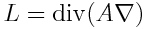
such that 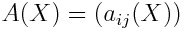 is strongly elliptic in the sense that there exists a positive constant 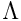 such that
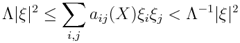
for all 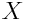 and all 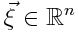. We do not assume symmetry of the matrix 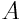. There are a variety of
reasons for studying the non-symmetric situtation. These include the connections with non-divergence form equations, and the broader issue of obtaining
estimates on elliptic measure in the absence of special  identities which relate tangential and normal derivatives. The results
described are joint work with M. Dindos and D. Rule for operators satsfisfying a Carleson condition, and with S. Hofmann, C. Kenig and S. Mayboroda
for operators with time-independent bounded measurable coefficients.
identities which relate tangential and normal derivatives. The results
described are joint work with M. Dindos and D. Rule for operators satsfisfying a Carleson condition, and with S. Hofmann, C. Kenig and S. Mayboroda
for operators with time-independent bounded measurable coefficients.
Afternoon Session (1:00 pm – 3:50 pm)
- Ariel Barton (University of Minnesota)
- 1:00 pm – 1:20 pm
- The Dirichelt problem for higher order equations in composition form
- In 1986, Dahlberg, Kenig and Verchota proved that unique solutions to the Dirichlet problem for the bilaplacian
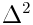, with
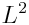 boundary data, exist in Lipschitz domains. After applying a change of
variables, the bilaplacian
becomes a fourth-order operator of the form
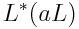, where
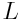 is a second-order divergence-form elliptic operator and
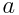 is scalar-valued function. We construct solutions to the Dirichelt problem for some other opeators of the form
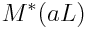.
- Malabika Pramanik (University of British Columbia)
- 1:30 pm – 1:50 pm
- Chaos dynamics of the heat semigroup in Riemannian symmetric spaces
- We show that the heat semigroup generated by certain pertubations of the Laplace-Beltrami operator on the
Riemannian symmetric spaces of noncompact type is chaotic on their 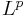-spaces
when 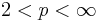. Both the range of p and the range of
chaos-iducing pertubation are sharp. This extends a result of Ji and Weber where it was shown that under identical
conditions the heat operator is subspace-chaotic on these spaces.
- Nicholas Boros (Olivet Nazarene University)
- 2:00 pm – 2:20 pm
- Laminates meet Burkholder functions
- Let 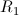 and 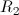 be the planar Riesz transforms.
We compute the 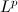-operator norm of a quadratic pertubation of
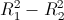 as
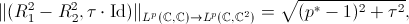
for 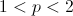 and 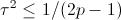,
or 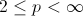 and 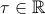. To obtain the
lower bound estimate of, what we are calling a quadratic perturbation of ,
we discuss a new approach of constructing laminates (a special type of probability measure on matrices) to approximate the Riesz transform. Both the upper bound
and the lower bound estimates of the operator rely on using the results for the estimates on the quadratic perturbation of the martingale transform (a joint
result with P. Janakiraman and A. Volberg). This is a joint result with L. Szekelyhidi, Jr. and A. Volberg.
- Armen Vagharshakyan (Brown University)
- 2:30 pm – 2:50 pm
- Lower bounds for L1 discrepancy
- We find the best constant of the leading term of the asymptotical lower bound for the L1 norm of two-dimensional
axis-parallel discrepancy that could be obtained by K. Roth's "test function" method among a large class of test functions.
We use the methods of combinatorics, probability, complex and harmonic analysis.
- Jonas Azzam (University of Washington)
- 3:00pm – 3:20 pm
- Wasserstein Distance and Rectifiability of Doubling Measures
- In a recent paper, Tolsa has characterized d-regular uniformly rectifiable measures in Euclidean space using Wasserstein
distances. For a d-regular measure μ, he defines a quantity α(x,r), which roughly speaking measures the Wasserstein
distance between μ inside the ball B(x,r) and planar d-dimensional measure, and proves that uniform rectifiability of μ is
equivalent to
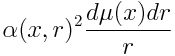
being a Carleson measure. In this talk
we explore what conditions on α(x,r) are necessary to guarantee different grades of rectifiability for μ if we only assume
μ is a doubling measure. We also establish rectifiability using more intrinsic quantities similar to α(x,r) involving the
Wasserstein distance which estimate the doubling behavior of μ.
- Stephen Lewis (University of Washington)
- 3:30pm – 3:50 pm
- The Geometry of Asymptotically Optimally Doubling Measures
- A very general question in Geometric Measure Theory is "how does the regularity of a measure affect the geometry of its
support?" An asymptotically optimally doubling measure on
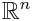 is one which infitesimally behaves like m-dimensional Lebesgue measure.
David, Kenig and Toro, as well as Preiss, Tolsa and Toro, studied such measures under a mild flatness assumption on the support.
In this talk, we discuss the geometry of the support of such measures without any flatness assumptions.
Organizers
Theresa Anderson, Matthew Badger, Nathan Pennington, Eric Stachura
— Last Updated on November 5, 2012 —